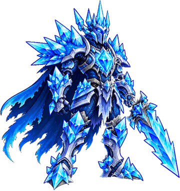
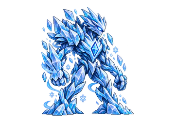
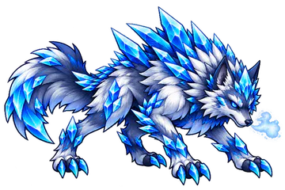
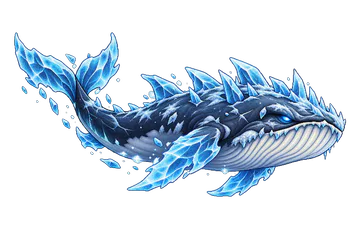

Estratégia
Como jogar com o Gelo
O Gelo controla a Barra ATB. Junte Intensidades de Congelamento nos inimigos com Vento Gelado e Canhão de Bolas de Neve; o Florete de Gelo sobe a sua chance de Congelar de 10% para 55%.
Com o campo congelado, solte a Concentração Gélida, a Ultimate: ela consome todo o Congelamento e causa 60% do Ataque por Intensidade (9 Intensidades = 540%). O ponto fraco: o maior dano do Gelo depende de preparação.

Contra NaturezaSuas Habilidades causam +50% de dano.

Contra FogoSuas Habilidades causam −50% de dano.
Na Estratégia Elemental você escolhe 2 Passivas e 3 Ativas do Gelo, e a Ultimate ocupa um dos 3 lugares de Ativa. Lutar com o Gelo aumenta a sua Maestria nele.
Efeito especial
Congelamento
Congelamento Intensidade I a V
Trava a Barra ATB do alvo por alguns segundos e reduz a Velocidade e o dano que ele causa.
Sempre ativas
As 6 Passivas
Funcionam sozinhas durante a batalha. Você leva 2 delas.
-
Nevasca
- A cada 15 s: causa 75% do Ataque em todos os inimigos
- Cada um tem 30% de chance de receber 1 Intensidade de Congelamento
- Um inimigo aleatório recebe 125% no lugar de 75%
-
Bloco de Gelo
- A cada 15 s: causa 120% do Ataque no inimigo da posição Central (ou no mais distante)
- Aplica 1 Intensidade de Congelamento (garantida)
-
Chão de Gelo
- No início da batalha, por 20 s: todos os inimigos ficam com -10% de Precisão e -15% de Esquiva
-
Barreira de Estalactites
- No início da batalha, cria uma barreira com 24% da sua Vida Máxima e 12% da sua Defesa
- Reflete 20% do dano que recebe
- Enquanto ela existir, você não pode ser Congelado
- Ao ser destruída: aplica 1 Intensidade de Congelamento em todos os inimigos
-
Coração Congelado
- Enquanto houver ao menos 1 inimigo com Congelamento: +15% de Defesa
- Se algum inimigo estiver com Congelamento 5: +10% de Precisão
-
Estilhaços Eternos
- Quando um inimigo perde todo o Congelamento, cada um dos outros tem 20% de chance de receber 1 Intensidade
Você decide a hora
As 7 Ativas
Entram na Fila de Habilidades e são usadas quando a Barra ATB enche. Você leva 3, incluindo a Ultimate.
-
Concentração Gélida Ultimate
- Consome todo o Congelamento de todos os inimigos
- Causa 60% do Ataque no alvo para cada Intensidade consumida (ex.: 9 Intensidades = 540%)
Recarga: 15 s
-
Florete de Gelo Buff Ofensivo
- Por 20 s: +35% de Ataque
- Sua chance de aplicar Congelamento passa de 10% para 55%
Recarga: 6 s
-
Canhão de Bolas de Neve Dano Contínuo
- Dispara 6 vezes em 1 inimigo (1 por segundo), cada disparo causa 18% do Ataque
- Chance de Congelamento crescente a cada disparo: 5%, 9%, 13%, 17%, 22% e 26%
Recarga: 12 s
-
Explosão Congelante Dano em Área
- Causa 70% do Ataque em todos os inimigos e reduz a Defesa deles em 10% por 15 s
- Com 2 ou mais inimigos: um deles também perde 15% de Ataque por 15 s
Recarga: 10 s
-
Vento Gelado Controle
- Aplica 1 Intensidade de Congelamento em todos os inimigos, conforme a posição:
- Frente: garantida · Central: 40% de chance · Retaguarda: 20% de chance
Recarga: 8 s
-
Corpo Gelado Defesa / Purificação
- Remove todos os efeitos negativos de você
- Para cada efeito removido, por 10 s: -5% de Ataque e +5% de Defesa
Recarga: 16 s
-
Lâminas de Gelo Buff Ofensivo
- Por 12 s: cada ataque que acertar solta uma lâmina extra de 55% do Ataque
- As lâminas não aplicam Congelamento
Recarga: 8 s

Bestiário
Monstros do Gelo
Para enfrentá-los, entre com o Fogo. Os 10 monstros do Gelo em Entherya, do mais forte ao mais fraco:

Cavaleiro do Inverno Eterno
Tier 6 · Chefe da etapa 4-3

Elemental de Gelo
Tier 5 · Chefe da etapa 2-4

Lobo da Geada
Tier 6

Baleia Glacial
Tier 7
- Baleia Glacial T7
- Cavaleiro do Inverno Eterno T6 · Chefe 4-3
- Lobo da Geada T6
- Elemental de Gelo T5 · Chefe 2-4
- Gárgula de Gelo T5
- Caranguejo de Gelo T4
- Lebre Glacial T3
- Bola de Neve T2 · Chefe 1-3
- Gatinho Gélido Filhote T2
- Boneco de Neve Pequeno T1
Perguntas frequentes
Gelo: dúvidas comuns
Qual Elemento vence o Gelo em Elemental Knights?
O Fogo vence o Gelo: as habilidades do Fogo causam +50% de dano contra ele. Já as habilidades do Gelo causam −50% contra o Fogo.
Contra qual Elemento o Gelo é forte?
O Gelo vence a Natureza: suas habilidades causam +50% de dano contra inimigos da Natureza.
O que faz a Congelamento?
A Congelamento é o efeito do Gelo, com Intensidade de I a V. Trava a Barra ATB do alvo por alguns segundos e reduz a Velocidade e o dano que ele causa.
Qual é a Ultimate do Gelo?
Concentração Gélida: Consome todo o Congelamento de todos os inimigos; Causa 60% do Ataque no alvo para cada Intensidade consumida (ex.: 9 Intensidades = 540%); Recarga: 15 s.
Em quais mapas o Gelo fica mais forte?
Floresta de Pinheiros na Neve: nesses terrenos o Gelo causa +10% de dano e tem +2% de chance de aplicar Congelamento.
Quais Chefes são do Gelo?
No Modo História: Bola de Neve (etapa 1-3), Elemental de Gelo (etapa 2-4), Cavaleiro do Inverno Eterno (etapa 4-3).
Os seis Elementos
Conheça os outros


Escolha o seu Elemento
Elemental Knights é um RPG de estratégia para Android, grátis, em pixel art. As novidades e os convites para testar o jogo saem primeiro no Instagram.